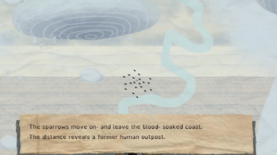
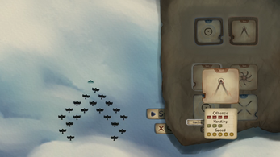
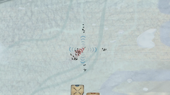

Game Design - Heading South
‘Heading South’ is a tale about a flock of sparrows that are forced to flee from an eternal winter. On this journey traversing a picture book landscape, you will be prompted with the impact of departure and leaving behind. Leading your sparrows, you must outmaneuver and eventually kill hostile flocks in this 2D top-down flock combat game, whilst enabling your own playstyle.
In this project I took on the Role of Lead Game Designer. In the following paragraphs I talk a bit about the vision of the project and some key features of the game design.
At the top of the page you can also find a download link to the game design document. The document was originally a 'wiki-style' glossar so the formatting as a text document is not perfect.
Project Vision
 As the Game Designer of Heading South my main objective was to create intricate designs which would realize the teams vision of a fun, action based flock combat game. The biggest challenge in the beginning was to translate our really rough ideas of how the game should look like in concrete and detailed designs so the programmers would have a solid approach for the implementation. In the case of Heading South this process got even harder due to the lack of comparable products on the market.
Boid Behavior for the "Flock feel"
The core of the game is the flock combat, so naturally I spent a lot of time creating a concept of how birds interact with each other, their own swarm and the enemy birds and swarms. In the end I took the approach to break down these interactions into different layers. At the lowest level is the flock object which is directly controlled by the player or the AI. It determines the general movement of the bird swarm. Parented to the flock object is a formation. Formations give each bird of the swarm a target position in the flock and therefore determine the shape and the visual representation of the flock’s current behaviour. Formations and their differences between each other serve as the main game element. At the last level there are the birds themselves. They are all individual objects and know of their affiliation to which flock they belong and they always strive to get to their assigned target position from the formation level. The idea is that due to the visuals of the collective movement of the birds, while chasing their target positions, the player gets the feeling of conducting a hive mind of entities instead of directly controlling a singular character. Under this leitmotiv there is a new and actually quite accessible way of conveying gameplay information to the player. For example a flock where all the birds are flying on their designated positions looks naturally more resilient and strong than a flock where half of the birds are trying to catch up, because they got forced away from their positions due to an enemy attack.
Combat Design

Formations are meant to be a central element of the game, therefore they needed to have
guidelines for creation. Formations are divided in attack and defend formations. Attack
formations should sport hard edges that give them a pointy and aggressive look, while
defensive formations on the contrary should have rounded shapes which let them appear
stable and passive. Inside these categories the formations need to be diverse and have
distinct features to facilitate different playstyles with each loadout combination. While the
triangle is very mobile and can attack from a far distance, the tornado formation is more
stationary and benefits the player when they position themselves in a foreseeing way.
Due to time limitations I was only able to create designs for the four formations, which got
implemented in the end, but there is a potential for more interesting formations.
Since Heading South focuses on the combat between flocks the requirements for the
collision system were quite high. For readability and simplicity on the implementation side I
decided that attacking and defending collisions will not be handled on the bird level, but the
formation level. Since attacking and defending actions are already indicated by the equipped
formation and its shape, it turned out to be natural when the colliders were sitting directly on
the formation object instead of each individual bird. On the other hand this undermined the
relevance of simulating many individual birds, now they are basically just punching bags you
have to protect with your formations. In retrospective or for future development I would have
liked to give the individual birds more interactions with the game systems, since now they
seem to me more like a glorified health bar.
Challenges of the Health System
 Speaking of health bars. In the beginning we had a health point system for the birds. Whenever a bird is hit it loses health and as soon as the health drops to zero it dies. The problem with this design was that without a visual representation of these health points it looked very arbitrary to the player at what point a bird would die. It was not an option for us to give each single bird a little health bar or over gradial representation of their health points since it would clutter the screen with too much information and break our simple visual design. The solution was a state driven health system where the birds get put into a vulnerable state for a set amount of time when hit. When hit again the bird simply dies. Therefore we only needed a visual representation for two states, which would later be realized by emitted particles. In our user testings the new health system was seen as a challenging, but fair and readable system.